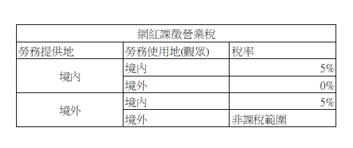

什麼是本篇所稱的「網紅」？何時需要辦理稅籍登記？常見的網紅收入類型有哪些？個人及公司網紅收入怎麼課稅？網紅的海外所得怎麼課稅？本篇會就以上問題綜合114年最新規範，讓您重點一次搞懂。
隨著自媒體經濟發展，透過 YouTube、IG、TikTok、直播平台或自行接案創作內容的「網紅」，已成為常見的收入來源型態。 財政部於 114年9月發布“網紅課稅作業規範”，明確說明各類收入性質、稅籍登記門檻及課稅方式。本所整理重點，協助創作者與企業快速掌握相關稅務知識。
一、什麼是本篇所稱的「網紅」？
- YouTuber、直播主、Podcaster
- IG / FB / TikTok 創作者
- 接案型內容創作者（部落客、寫手等）
二、何時需要辦理稅籍登記？
這是網紅最常見、也最容易忽略的問題。
財政部明確標準：
- 銷售貨物（如：自創品牌商品、團購）：每月達 10 萬元。
- 銷售勞務（如：廣告分潤、業配收入、打賞 Donate）：每月達 5 萬元。
符合以下特徵，通常會被認定為「營業人」：
- 持續性經營（固定更新、長期接案）
- 以營利為目的
- 設有實體固定營業場所
- 具備營業牌號
- 僱用人員處理業務
三、常見的網紅收入類型有哪些？
網紅收入可分為以下幾大類：
- 平台分潤收入：YouTube 廣告收益、平台創作者分潤
- 打賞／贊助（抖內）：屬「勞務對價」，需課稅
- 廣告／業配收入
- 銷售商品或勞務:自有品牌商品、線上課程等
- 代銷抽佣／聯盟行銷：導購分潤、推薦連結佣金
- 其他具經濟價值之報酬
四、個人及公司網紅收入怎麼課稅？
（一）未辦稅籍（個人所得）：併入「綜合所得稅」。
（二）已辦稅籍（營業人）：需課徵：
- 營業稅：一般稅率：5%
- 所得稅：公司營所稅20%、獨資行號併入個人綜所稅計稅
五、網紅的海外所得怎麼課稅？
我的公司收到海外公司付給的外幣分潤，我需要繳稅嗎？
需要開發票嗎？
可以適用零稅率嗎？
原則上網紅應依營業收入開立發票並繳納5％的營業稅。
- 但營業稅課徵範圍僅限於中華民國境內，
- 因此如果為「境外」之廣告、分潤等收益，
- 並附上相關報表或契約證明者，
- 可適用「零稅率」。
舉例來說，
- 某位網紅每月平台觀看收益為10萬元，
- 其中有80%為台灣觀眾、
- 20%為海外觀眾，
- 就20%營收的分是可以適用零稅率的。
六、事務所建議。
財政部表示，本規範屬網紅新興交易課稅新制，
- 目前國稅局將積極輔導，
- 訂定自即日起至115年6月30日止為輔導期間；
- 該期間內網紅及平台若有未依規定辦理稅籍登記、開立並交付統一發票或報繳營業稅之情形者，將暫不除罰。
若還想知道更多相關訊息也歡迎洽詢。
網紅課稅相關新聞時事案例如下： 本文目錄
網紅要課稅了！財部：4類網紅須辦稅籍登記 明年6/30前為輔導期 2025/09/10
〔記者鄭琪芳／台北報導〕網紅要課稅了！財政部今（10日）訂定發布「個人經常性於網路發表創作或分享資訊課徵營業稅作業規範」，境內網紅符合4條件之一，包括在我國設有實體固定營業場所、具備營業牌號或僱用人員協助處理銷售事宜，或透過網路銷售達營業稅起徵點，應辦理稅籍登記，依規定課徵營業稅，即起至2026年6月30日止為輔導期間。至於網紅課徵所得稅問題，財政部將另發布作業規範。
財政部說明，「網紅」指經常性於網路（包括社群媒體、影音平台、線上媒體等）發表創作或分享資訊的個人，「境內網紅」則指在我國境內設有固定營業場所、在境內有住所或居所、所使用電腦設備或行動裝置的安裝地在境內、使用行動裝置連結的手機號碼其國碼為我國代碼（886）、依相關資訊可判斷為我國境內的自然人（如帳單地址、銀行帳戶、IP位址、SIM卡）。
財政部表示，網紅授權平台利用其上傳創作或資訊播放廣告或提供相關付費服務，平台自廣告主或付費觀眾取得勞務收入（例如廣告收入或訂閱收入），而網紅達一定條件（如達一定粉絲人數）或與平台簽訂合約，自平台取得分潤性質勞務收入，形成網紅、平台、廣告主與觀眾四方連結的交易，屬新興網路交易型態，課徵營業稅作業規範如下：
一、境內網紅在我國設有實體固定營業場所、具備營業牌號或僱用人員協助處理銷售事宜，或透過網路銷售，其當月銷售額達營業稅起徵點（銷售貨物為10萬元、銷售勞務為5萬元），應辦理稅籍登記。
二、符合營業人要件的網紅提供的表演勞務，非屬執行業務者提供專業性勞務及個人受僱提供勞務；平台自廣告主或付費觀眾取得勞務收入、網紅自平台取得分潤性質勞務收入等營業模式，應分別課徵營業稅。
財政部說明，網紅自平台取得分潤性質勞務收入的營業模式，平台扮演中介角色提供無實體展演處所播放網紅表演勞務，須透過付費或免付費觀眾收看行為才能完成交易。這類勞務交易課徵營業稅方式，除依勞務訂約方（網紅與平台）判斷外，應以勞務收看及實際消費者（付費或免費觀眾）判斷，若觀眾位於我國境內，網紅自平台取得的分潤收入即屬我國營業稅課稅範圍。
舉例說明，境內網紅甲為營業人，其提供表演勞務授權境外平台YouTube使用、收益，自YouTube取得分潤性質勞務收入65元，其中源自境內付費或免付費觀眾收看部分占80%（即52元），因網紅甲表演勞務提供地、表演收看及使用地均在境內，由甲繳納營業稅；至於源自境外付費或免付費觀眾收看部分占20%（即13元），因甲表演勞務提供地在境內、表演收看及使用地在境外，可適用零稅率報繳營業稅。
財政部表示，上述規範屬網紅新興交易課稅新制，各地區國稅局將積極輔導，考量新制施行初期網紅及平台恐對相關規定不清楚，已訂定自今日起至2026年6月30日止（申報繳納於同年7月15日以前）為輔導期間，該期間內網紅及平台未依規定辦理稅籍登記、開立並交付統一發票或報繳營業稅，免依營業稅法規定處罰；網紅及平台若因疏忽違反規定，應主動補報補繳，以維自身權益。
2025/09/10
網紅也要辦稅籍登記課徵營業稅 專家解讀網紅稅要怎麼繳2026-02-14
網紅透過社群平台分享生活、娛樂等內容，流量除了帶來廣告收益，更以此為基礎發展出直播、業配、代言等經濟活動，「網紅經濟」利用網路社群平台的高度擴散性，形成新的交易型態及獲利模式。勤業眾信稅務部資深會計師陳惠明表示，針對此類新興網路經濟活動，財政部114年9月10日公布「個人經常性於網路發表創作或分享資訊課徵營業稅作業規範」，明確規範符合一定條件的網紅，須辦理稅籍登記，並釐清平台間營業稅之課徵方式，緩衝輔導期到今年6月30日。
網紅經濟交易參與人包括「網紅、平台、廣告主及觀眾」，網紅營業稅作業規範重點在分別辨識服務提供者及使用者在「境內」或「境外」，並依此適用不同的營業稅課稅原則。按營業稅法第3條第2項後段但書規定，執行業務者提供其專業性勞務，以及個人受僱提供勞務，原則上不屬於營業稅的課稅範圍；而所得稅法中所規範的執行業務者，尚包括表演人。陳惠明指出，這次財政部發布的作業規範，符合營業稅規定的網紅，自平台取得分潤性質勞務收入，不適用有關執行業務者提供之專業性勞務及個人受僱提供勞務規定，應依該規範課徵營業稅。
換句話說，境內網紅在台灣設有實體固定營業場所、具備營業牌號或僱??員協助處理銷售事宜，或當月透過網路銷售貨物達10萬元或銷售勞務達5萬元的營業稅起徵點，即應依法辦理稅籍登記並申報課徵營業稅。

陳惠明指出，本次網紅營業稅作業規範對於網紅勞務的「使用」判斷重點在於「觀眾」，例如平台自觀眾取得勞務收入，平台方是服務提供者，服務使用的判斷就是以交易另一方觀眾為準；又如網紅銷售表演勞務給平台再提供給觀眾收看，網紅可自平台取得分潤，此時認定平台扮演中介角色提供無實體展演處所播放網紅表演勞務，須透過觀眾收看（消費）行為，始能完成網紅表演勞務之交易，在這個情形下最終使用者還是觀眾；同樣的平台銷售廣告播放勞務給廣告主再播放給觀眾收看，也是以觀眾作為使用者的判定，與廣告主是境內或境外，是否收取外匯無關。
因為交易參與人是「境內」或「境外」直接影響課稅的判斷，陳惠明提醒，網紅營業稅作業規範針對境內「平台、網紅、廣告主及觀眾」做出說明，境內「平台」是指境內設有固定營業場所之平台，境內「網紅」、「廣告主」及「觀眾」除在境內設有固定營業場所外，如為個人，除了在境內有住所或居所外，所使用電腦設備或行動裝置之安裝地在境內、所使用行動裝置連結之手機號碼，其國碼為中華民國代碼（886）、或可依例如帳單地址、支付銀行帳戶資訊、使用設備之IP位址、用戶識別碼（SIM卡）等有關資訊可判斷為境內者算在內。
陳惠明表示，網紅經濟改寫了商業模式，這類透過網路形成的商業模式，在營業稅上勞務的提供或使用概念已不是傳統依靠地域或國境來區分境內或境外，網紅及平台面對新的營業稅課稅規範應審慎檢視目前的交易型態，在今年6月30日緩衝輔導期前調整改善以免受罰。